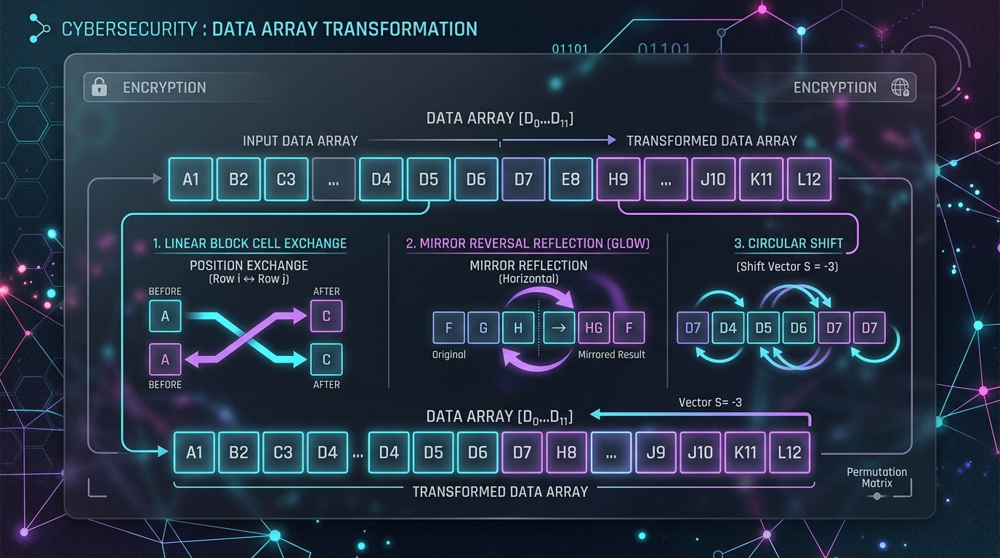

Série N°7 : Tableaux 1D & Sous-programmes
Exercice 1 : QCM Déclarations, Types & Normes Officielles
🟢 Facile- Un tableau à une dimension est une structure de données statique et homogène : tous ses éléments partagent le même type.
- Déclaration algorithmique : Un tableau se déclare obligatoirement en deux temps :
- Dans le T.D.N.T. :
Tab = Tableau de N Type_Élément(ex:Tab = Tableau de 20 Entier). - Dans le T.D.O. / T.D.O.L. :
t : Tab.
- Dans le T.D.N.T. :
- En Python 3 : On importe obligatoirement
from numpy import arrayet on initialise un tableau statique de taille $N$ par :t = array([0] * N)ouarray([0.0] * N). - Passage par adresse : Tout sous-programme qui modifie le contenu d'un tableau (remplissage, permutation, tri) doit le déclarer avec le symbole
@en algorithme :Procédure Remplir(@t : Tab, n : Entier). - Affichage officiel : L'instruction
print(t)brut est strictement interdite aux épreuves officielles. L'affichage s'effectue toujours élément par élément via une boucle indicéePour i de 0 à n - 1 Faire.
Cochez la bonne réponse pour chacune des 10 questions suivantes :
Question 1
Où doit-on définir le type d'un tableau avant de déclarer une variable de ce type en algorithmique ?
- Directement dans le T.D.O. sans aucun préalable
- Dans le T.D.N.T. (Tableau de Déclaration des Nouveaux Types) avec la syntaxe
Tab = Tableau de N Type - Uniquement à l'intérieur du corps de la procédure principale
- Dans les commentaires du programme
Question 2
Quelle est la syntaxe officielle en Python pour créer un tableau numpy de 15 entiers initialisés à 0 ?
from numpy import arraysuivi det = array([0] * 15)t = [0] * 15(liste Python standard sans numpy)t = table(15)dim t(15) as integer
Question 3
Pour un tableau $T$ de taille effective $N$ indexé à partir de 0, quel est l'indice du dernier élément valide ?
- $N$
- $N + 1$
- $N - 1$
- $1$
Question 4
Que se produit-il en Python si l'on tente d'accéder à t[N] pour un tableau de taille $N$ ?
- Le programme renvoie 0 automatiquement
- Une erreur
IndexError: index is out of boundsest déclenchée - Le tableau s'agrandit automatiquement d'une case
- La première case
t[0]est renvoyée
Question 5
Quelle est la forme correcte de l'en-tête d'une procédure chargée de remplir un tableau $T$ de $N$ réels ?
Fonction Remplir(t : Tab, n : Entier) : TabProcédure Remplir(t : Tab, @n : Entier)Procédure Remplir(@t : Tab, n : Entier)Procédure Remplir(t : Réel, n : Entier)
Question 6
Pourquoi le paramètre t doit-il être précédé de @ dans la procédure Remplir(@t : Tab, n : Entier) en algorithmique ?
- Parce que les modifications apportées aux cases du tableau doivent être répercutées dans la variable appelante (passage par adresse)
- Pour empêcher l'utilisateur de saisir des valeurs négatives
- Parce que la taille $N$ est inconnue à la compilation
- Parce que le symbole @ accélère les calculs arithmétiques
Question 7
En Python, comment se comporte un tableau numpy passé comme argument à une fonction def remplir(t, n): ?
- Une copie intégrale est créée, donc les modifications sont perdues à la fin
- Le tableau est un objet mutable transmis par référence d'objet : ses cases sont modifiées sur place sans mot-clé supplémentaire
- Une erreur de syntaxe est levée s'il n'y a pas le mot-clé
global t - Le tableau est converti en chaîne de caractères
Question 8
Selon les conventions officielles du Baccalauréat, comment doit-on afficher les éléments d'un tableau $T$ de taille $N$ ?
- En écrivant simplement
print(t) - En écrivant
Ecrire(t)en algorithmique - Élément par élément à l'aide d'une boucle :
Pour i de 0 à n - 1 Faire Ecrire(t[i]) - En convertissant le tableau en entier
Question 9
Quelle structure de contrôle est recommandée pour contraindre la saisie de la taille $N$ ($3 \le N \le 20$) ?
- Une boucle
Répéter ... Jusqu'à (n ≥ 3) Et (n ≤ 20) - Une simple condition
Si n < 3 Alors - Une boucle
Pour i de 3 à 20 Faire - Une fonction récursive infinie
Question 10
Quelle affirmation sur la structure d'un tableau 1D (au sens du programme officiel) est vraie ?
- Un tableau peut contenir à la fois un entier, une chaîne et un booléen dans différentes cases
- Un tableau est homogène : toutes ses cases contiennent obligatoirement des éléments de même type
- La taille d'un tableau peut augmenter ou diminuer librement au cours de l'exécution grâce à
append() - Les indices d'un tableau peuvent être des nombres réels décimaux
Exercice 2 : QCM Parcours Indicé, Calculs Types & Traitements
🟢 FacileAnalysez les algorithmes et portions de code suivants portant sur les parcours types :
Question 1
Pour calculer la somme des éléments d'un tableau $T$ de $N$ entiers, comment doit-on initialiser l'accumulateur somme avant la boucle ?
somme ← t[0]somme ← 0somme ← 1somme ← n
Question 2
Pour rechercher la valeur minimale d'un tableau $T$ de $N$ entiers, quelle est la bonne méthode d'initialisation de min_val ?
- Initialiser
min_val ← 0puis parcourir de 0 à $N-1$ (ce qui serait faux si tous les éléments sont strictement positifs !) - Initialiser
min_val ← 999999au hasard - Initialiser
min_val ← t[0]puis parcourir de $i = 1$ à $N - 1$ - Initialiser
min_val ← t[n - 1]sans faire de boucle
Question 3
Soit la fonction suivante calculant la moyenne des valeurs d'un tableau :
Fonction Moyenne(t : Tab, n : Entier) : Réel
Début
Retourner Somme(t, n) / n
FinQuel est le mode de passage du paramètre t dans cette fonction ?
- Passage par valeur (consultation pure du tableau sans modification)
- Passage par adresse car il y a le symbole @
- Passage global automatique
- Passage par référence destructive
Question 4
Quelle condition permet de vérifier si l'élément t[i] d'un tableau d'entiers est un nombre pair ?
i Mod 2 = 0(qui teste si l'indice est pair, pas la valeur !)t[i] Mod 2 = 0t[i] Div 2 = 0t[i] / 2 = 0
Question 5
Comment permuter le contenu de deux cases t[i] et t[j] dans un tableau ?
t[i] ← t[j] ; t[j] ← t[i](sans variable intermédiaire, écrasement de t[i])t[i] ← aux ; aux ← t[j] ; t[j] ← t[i]aux ← t[i] ; t[i] ← t[j] ; t[j] ← auxPermuter(i, j)sans toucher à t
Question 6
Soit le script Python suivant :
from numpy import array
def compter_positifs(t, n):
c = 0
for i in range(n):
if t[i] > 0:
c = c + 1
return c
t = array([12, -4, 0, 7, -9, 15])
print(compter_positifs(t, 6))Quelle valeur est affichée à l'écran ?
- 3 (les nombres 12, 7 et 15)
- 4 (en comptant le zéro)
- 2
- 6
Question 7
Dans un sous-programme qui prend un tableau t : Tab et sa taille effective n : Entier, quel rôle joue l'identificateur i dans la boucle Pour i de 0 à n - 1 ?
- C'est une variable globale accessible partout dans le programme
- C'est une variable locale au sous-programme, servant d'indice compteur, déclarée dans le T.D.O.L. comme Entier
- C'est une constante définie dans le T.D.N.T.
- C'est un pointeur mémoire non déclaré
Question 8
Soit un tableau $T = [5, 10, 15, 20]$. Que vaut l'expression t[t[0] - 4] ?
- 5
- 15
- 10 (car $t[0] = 5$, donc $5 - 4 = 1$, et $t[1] = 10$)
- 20
Question 9
Pour doubler la valeur de chaque élément d'un tableau sur place, on utilise :
- Une procédure avec
@t : Tabcontenant la bouclePour i de 0 à n - 1 Faire t[i] ← t[i] * 2 - Une fonction retournant un entier
somme * 2 - Une affectation simple
t ← t * 2en algorithmique standard - Une boucle
Pour i de 0 à n - 1 Faire i ← i * 2
Question 10
Quelle est la transcription exacte en Python de la boucle algorithmique Pour i de 0 à n - 1 Faire ?
for i in range(1, n):for i in range(n):(qui parcourt bien les entiers de 0 à $n-1$)for i in range(0, n + 1):while i < n - 1:
Exercice 3 : Station Météorologique & Relevés de Températures (Mixte Mesures & Statistiques)
🟢 FacileUne station météorologique automatisée enregistre les températures journalières moyennes (en degrés Celsius, réels) d'une région sur une période de $N$ jours consécutifs ($3 \le N \le 31$).
L'opérateur de la station a besoin d'un programme modulaire pour :
- Saisir et valider le nombre effectif de jours $N$.
- Remplir un tableau de températures $T$ avec des valeurs réalistes comprises entre $-15.0^\circ\text{C}$ et $50.0^\circ\text{C}$.
- Calculer la température moyenne de la période.
- Identifier simultanément en un seul parcours la température la plus basse ($T_{min}$) et la plus haute ($T_{max}$).
- Dénombrer le nombre de jours de gelée ($T[i] \le 0.0^\circ\text{C}$).
- Afficher le rapport détaillé élément par élément et la synthèse statistique.
Le programme doit être décomposé selon les spécifications suivantes :
- Une procédure
Saisie_N(@n : Entier)qui contrôle la saisie de $N$ dans l'intervalle $[3, 31]$. - Une procédure
Remplir_Temp(@t : TabReels, n : Entier)qui lit les $N$ réels dans $T$ en exigeant que chaque valeur soit dans $[-15.0, 50.0]$. - Une fonction
Moyenne_Temp(t : TabReels, n : Entier) : Réelqui calcule et retourne la moyenne arithmétique. - Une procédure
Extremes_Temp(t : TabReels, n : Entier, @t_min : Réel, @t_max : Réel)qui détermine $T_{min}$ et $T_{max}$ en un seul parcours de boucle. - Une fonction
Nb_Jours_Gel(t : TabReels, n : Entier) : Entierqui retourne le nombre de journées où $T[i] \le 0.0$. - Une procédure
Afficher_Bilan(t : TabReels, n : Entier)qui affiche le relevé jour par jour (ex:"Jour 1 : 12.5 °C"), puis le compte-rendu final (moyenne, minimum, maximum et jours de gel).
Travail demandé :
- Pourquoi la détermination de $T_{min}$ et $T_{max}$ est-elle confiée à une procédure à deux paramètres
@t_minet@t_maxplutôt qu'à deux fonctions séparées ? Quel est le bénéfice en termes de nombre de parcours du tableau ? - Dresser le T.D.N.T. global déclarant le type
TabReels. - Rédiger l'algorithme de la procédure
Saisie_Net de la procédureRemplir_Temp. - Rédiger l'algorithme de la fonction
Moyenne_Tempet de la procédureExtremes_Tempavec son T.D.O.L.. - Rédiger l'algorithme de la fonction
Nb_Jours_Gelet de la procédureAfficher_Bilan. - Rédiger l'algorithme du programme principal accompagné de son T.D.O.G..
- Proposer la transcription intégrale en
Python 3en utilisant la bibliothèquenumpy.
- Déclaration T.D.N.T. :
TabReels = Tableau de 31 Réel. - Dans
Extremes_Temp, initialisert_min ← t[0]ett_max ← t[0], puis lancer la bouclePour i de 1 à n - 1 Faire. Comparert[i]avect_minett_max. - Dans
Afficher_Bilan, pour un affichage convivial commençant à 1 pour l'utilisateur, afficher"Jour ", i + 1, " : ", t[i], " °C". - En Python, initialiser le tableau avec
t = array([0.0] * 31).
• $T = [12.5, -3.0, 0.0, 18.2, -1.5]$
→ Moyenne : $5.24^\circ\text{C}$
→ Minimum ($T_{min}$) : $-3.0^\circ\text{C}$ | Maximum ($T_{max}$) : $18.2^\circ\text{C}$
→ Nombre de jours de gel ($T[i] \le 0$) : 3 jours ($-3.0$, $0.0$, $-1.5$).
Exercice 4 : Contrôle Qualité Industriel & Tolérance de Fabrication (Mixte Tolérance Mécanique)
🟢 FacileDans une usine d'usinage mécanique de haute précision, un banc de mesure optique enregistre les diamètres effectifs (en millimètres) d'un lot de $N$ pièces cylindriques ($5 \le N \le 50$).
Le cahier des charges impose un diamètre nominal de référence $D_{ref} = 25.0\text{ mm}$ avec une tolérance admissible $\Delta = 0.2\text{ mm}$. Une pièce est déclarée conforme si son diamètre $d$ vérifie :
Toute pièce hors de cet intervalle $[24.8\text{ mm}, 25.2\text{ mm}]$ est classée comme rebut.
Le système informatique doit intégrer les sous-programmes suivants :
- Une procédure
Saisie_Taille(@n : Entier)qui garantit $5 \le N \le 50$. - Une procédure
Remplir_Mesures(@t : TabReels, n : Entier)qui lit les $N$ diamètres mesurés (chaque valeur devant être strictement positive). - Une fonction
Est_Conforme(val : Réel, ref : Réel, tol : Réel) : Booléenqui renvoieVraisi $|val - ref| \le tol$ (en utilisant la fonction standardAbs), etFauxsinon. - Une procédure
Filtrer_Pieces(t : TabReels, n : Entier, ref : Réel, tol : Réel, @nb_ok : Entier, @nb_rebuts : Entier)qui parcourt le tableau et dénombre simultanément les pièces conformes et les rebuts. - Une fonction
Taux_Conformite(nb_ok : Entier, n : Entier) : Réelqui calcule et retourne le pourcentage de pièces conformes : $\frac{nb\_ok}{n} \times 100$. - Une procédure
Afficher_Rapport_Qualite(t : TabReels, n : Entier, ref : Réel, tol : Réel)qui affiche pour chaque pièce son numéro, sa mesure, son statut ([CONFORME]ou[REBUT]), puis le taux global de conformité et une décision finale :"Lot Accepté"si le taux $\ge 80\%$, sinon"Lot Refusé".
Travail demandé :
- Dresser le T.D.N.T. pour le type
TabReels = Tableau de 50 Réel. - Rédiger l'algorithme de la fonction
Est_Conformeen utilisantAbs(val - ref). - Dresser le T.D.O.L. et rédiger l'algorithme de la procédure
Filtrer_Pieces. - Rédiger l'algorithme de la fonction
Taux_Conformiteet de la procédureAfficher_Rapport_Qualite. - Dresser le T.D.O.G. et rédiger l'algorithme du programme principal (en fixant $ref = 25.0$ et $tol = 0.2$).
- Donner la solution complète en
Python 3avecnumpy.
- La fonction standard
Abs(x)retourne la valeur absolue en algorithme (en Python,abs(x)). - Dans
Filtrer_Pieces, initialisernb_ok ← 0etnb_rebuts ← 0. Pour chaque élémentt[i], appelerEst_Conforme(t[i], ref, tol). Si vrai, incrémenternb_ok, sinon incrémenternb_rebuts. - Attention à la division dans
Taux_Conformite: s'assurer du calcul en réel pour éviter la division entière.
• $T = [25.05, 24.78, 25.19, 25.35, 24.95, 25.00]$
→ Pièce 1 ($25.05$) : [CONFORME] (écart $0.05 \le 0.2$)
→ Pièce 2 ($24.78$) : [REBUT] (écart $0.22 > 0.2$)
→ Pièce 3 ($25.19$) : [CONFORME] | Pièce 4 ($25.35$) : [REBUT]
→ Pièce 5 ($24.95$) : [CONFORME] | Pièce 6 ($25.00$) : [CONFORME]
→ Conformes : $4$, Rebuts : $2$ → Taux : $\mathbf{66.67\%}$ → Lot Refusé (< 80%).
Exercice 5 : Sismologie & Détection de Pics Sismiques (Mixte Détection Locale & Tableaux Parallèles)
🟠 IntermédiaireUn observatoire géophysique enregistre les amplitudes d'ondes sismiques à l'aide d'un capteur haute fréquence. Le signal discrétisé est stocké dans un tableau $T$ de $N$ entiers strictement positifs ($3 \le N \le 50$).
En traitement de signal, un pic sismique local est défini comme une mesure située à l'indice $i$ ($1 \le i \le N - 2$) strictement supérieure à son voisin immédiat de gauche ET à son voisin immédiat de droite :
Remarque : Les deux extrémités $T[0]$ et $T[N-1]$ ne possèdent qu'un seul voisin et ne peuvent donc jamais être qualifiées de pics stricts.
On désire implémenter la solution modulaire suivante :
- Une procédure
Saisie_N(@n : Entier)pour valider $3 \le N \le 50$. - Une procédure
Remplir_Signal(@t : TabEntiers, n : Entier)qui lit les $N$ amplitudes entières positives. - Une fonction
Est_Pic(t : TabEntiers, i : Entier) : Booléenqui prend le tableau et un indice $i$ ($1 \le i \le N - 2$) et teste si $T[i]$ est un pic local. - Une fonction
Compter_Pics(t : TabEntiers, n : Entier) : Entierqui calcule le nombre total de pics dans le signal. - Une procédure
Extraire_Pics(t : TabEntiers, n : Entier, @pics : TabEntiers, @pos : TabEntiers, @nb_p : Entier)qui construit deux tableaux parallèles :pics: contient les valeurs d'amplitude de chaque pic détecté.pos: contient les indices respectifs $i$ où ces pics apparaissent.@nb_p: retourne le nombre effectif de pics insérés dans ces deux tableaux.
- Une procédure
Afficher_Analyse_Sismique(t : TabEntiers, n : Entier)qui affiche le signal complet, puis les résultats de l'extraction (si aucun pic n'est trouvé, afficher"Signal plat : aucun pic sismique détecté.").
Travail demandé :
- Pourquoi la boucle de détection des pics doit-elle obligatoirement commencer à l'indice $i = 1$ et s'arrêter à l'indice $i = N - 2$ ? Que se passerait-il si l'on évaluait
Est_Pic(t, 0)ouEst_Pic(t, N - 1)? - Dresser le T.D.N.T. pour
TabEntiers = Tableau de 50 Entier. - Rédiger l'algorithme de la fonction
Est_Pic(t : TabEntiers, i : Entier) : Booléen. - Rédiger l'algorithme de la fonction
Compter_Pics. - Dresser le T.D.O.L. et rédiger l'algorithme de la procédure
Extraire_Pics. - Rédiger l'algorithme de la procédure
Afficher_Analyse_Sismique. - Traduire l'ensemble en
Python 3.
- Pour éviter un dépassement d'indice (
IndexError), la condition $1 \le i \le N - 2$ garantit que $i - 1 \ge 0$ et $i + 1 \le N - 1$. - Dans
Extraire_Pics, maintenir un curseurnb_p ← 0. Pour chaque $i$ de $1$ à $n - 2$, siEst_Pic(t, i)est vrai, affecterpics[nb_p] ← t[i],pos[nb_p] ← i, puis incrémenternb_p ← nb_p + 1. - En Python, initialiser
pics = array([0] * 50)etpos = array([0] * 50).
• $T = [10, 45, 20, 20, 85, 30, 95, 40]$
→ Indice 1 ($45$) : $45 > 10$ et $45 > 20$ → PIC détecté à pos = 1
→ Indice 2 ($20$) : $20 \ngtr 45$ → Non pic
→ Indice 4 ($85$) : $85 > 20$ et $85 > 30$ → PIC détecté à pos = 4
→ Indice 6 ($95$) : $95 > 30$ et $95 > 40$ → PIC détecté à pos = 6
→ Nombre total de pics : 3
→ Tableaux résultats :
pics = [45, 85, 95] et pos = [1, 4, 6].
Exercice 6 : Cryptographie & Transformations d'un Vecteur (Mixte Permutations In-Place)
🟠 IntermédiaireDans un protocole expérimental de chiffrement par transposition, un bloc de données est représenté par un tableau $T$ de $N$ entiers ($4 \le N \le 40$), avec $N$ obligatoirement pair.
Pour rendre les données méconnaissables avant transmission, le vecteur subit une cascade de transformations géométriques sur place (in-place, sans tableau auxiliaire) :
- Inversion miroir : Échange des éléments symétriques ($T[0] \leftrightarrow T[N-1]$, $T[1] \leftrightarrow T[N-2]$, etc.).
- Permutation circulaire droite : Chaque élément avance d'une case vers la droite ($T[i] \to T[i+1]$), et le dernier élément revient en première case ($T[N-1] \to T[0]$).
- Échange des deux moitiés : La première moitié du tableau ($0 \dots \frac{N}{2}-1$) est permutée avec la seconde moitié ($\frac{N}{2} \dots N-1$).

On demande de modulariser la solution comme suit :
- Une procédure
Saisie_Taille_Paire(@n : Entier)qui exige que $N \in [4, 40]$ et que $N \text{ Mod } 2 = 0$. - Une procédure
Remplir_Vecteur(@t : Tab, n : Entier)pour saisir les $N$ valeurs. - Une procédure élémentaire
Permuter_Cases(@t : Tab, i : Entier, j : Entier)qui échange les valeurs de $T[i]$ et $T[j]$. - Une procédure
Inverser_Miroir(@t : Tab, n : Entier)qui inverse le tableau sur place en effectuant une bouclePour i de 0 à (n Div 2) - 1et en appelantPermuter_Cases(t, i, n - 1 - i). - Une procédure
Rotation_Droite(@t : Tab, n : Entier)qui sauvegarde le dernier élément $T[N-1]$ dans une variable temporaire, décale tous les éléments vers la droite de $N-2$ à $0$, puis place la sauvegarde en $T[0]$. - Une procédure
Echanger_Moities(@t : Tab, n : Entier)qui échange chaque case $i$ ($0 \le i < \frac{N}{2}$) avec la case $i + \frac{N}{2}$ correspondante. - Une procédure
Afficher_Vecteur(t : Tab, n : Entier, titre : Chaîne)qui affiche le titre et le contenu du tableau sur une seule ligne.
Travail demandé :
- Pourquoi la boucle de
Inverser_Miroirdoit-elle impérativement s'arrêter à(n Div 2) - 1? Que se passerait-il si elle continuait jusqu'à $n - 1$ ? - Dresser le T.D.N.T. pour
Tab = Tableau de 40 Entier. - Rédiger l'algorithme de
Permuter_Caseset deInverser_Miroir. - Rédiger l'algorithme de
Rotation_Droiteen détaillant le sens de parcours du décalage (pourquoi doit-on décaler de droite à gauche et non de gauche à droite ?). - Rédiger l'algorithme de
Echanger_Moities. - Rédiger l'algorithme du programme principal orchestrant les trois transformations successives avec affichage à chaque étape.
- Traduire le tout en
Python 3.
- Dans
Inverser_Miroir, si la boucle parcourait jusqu'à $n-1$, chaque élément serait permuté deux fois, restaurant ainsi le tableau d'origine ! - Dans
Rotation_Droite, décaler impérativement en marche arrière :Pour i de n - 1 à 1 (pas de -1) Faire t[i] ← t[i - 1]. Si l'on décalait vers l'avant, la première valeur écraserait toutes les suivantes. - Dans
Echanger_Moities, le décalage pour la seconde moitié est $m = n \text{ Div } 2$. ÉchangerPermuter_Cases(t, i, i + m)pour $i$ allant de 0 à $m - 1$.
• Tableau initial : $T = [1, 2, 3, 4, 5, 6]$
1. Après
Inverser_Miroir : $T = [6, 5, 4, 3, 2, 1]$2. Après
Rotation_Droite : $T = [1, 6, 5, 4, 3, 2]$3. Après
Echanger_Moities ($m = 3$) :$T[0..2] \leftrightarrow T[3..5] \implies T = [4, 3, 2, 1, 6, 5]$.
Exercice 7 : Bio-informatique & Analyse de Brin d'ADN (Mixte Filtrage & Compression)
🔴 AvancéDans une plateforme d'analyse génomique, un fragment de brin d'acide désoxyribonucléique (ADN) est représenté par un tableau de caractères $ADN$ de taille $N$ ($5 \le N \le 60$).
Chaque cellule du tableau représente un nucléotide élémentaire et doit impérativement être l'une des 4 bases azotées :
'A' : Adénine
'C' : Cytosine
'G' : Guanine
'T' : Thymine
Avant de stocker ou d'aligner le brin, le système doit calculer la composition nucléotidique, évaluer le ratio de stabilité thermique ($GC\%$), et générer une séquence compactée éliminant les nucléotides répétés consécutivement (ex: ['A','A','C','G','G','G','T'] $\to$ ['A','C','G','T']).
La conception impose les modules suivants :
- Une procédure
Saisie_Taille(@n : Entier)avec validation $5 \le N \le 60$. - Une fonction
Est_Nucleotide(c : Caractère) : Booléenqui renvoieVraisi $c \in \{'A', 'C', 'G', 'T'\}$ etFauxsinon. - Une procédure
Remplir_ADN(@adn : TabCar, n : Entier)qui saisit chaque case avec une boucleRépéter ... Jusqu'à Est_Nucleotide(adn[i])pour refuser toute saisie invalide. - Une procédure
Compter_Bases(adn : TabCar, n : Entier, @nb_a : Entier, @nb_c : Entier, @nb_g : Entier, @nb_t : Entier)qui comptabilise les 4 fréquences en un unique parcours. - Une fonction
Taux_GC(nb_c : Entier, nb_g : Entier, n : Entier) : Réelqui retourne le pourcentage de bases G et C : $\frac{nb\_c + nb\_g}{n} \times 100$. - Une procédure
Compacter_Sequence(adn : TabCar, n : Entier, @compact : TabCar, @nb_comp : Entier)qui construit le tableaucompactne contenant aucun doublon consécutif et calcule sa taille effectivenb_comp. - Une procédure
Afficher_Sequence(t : TabCar, n : Entier, libelle : Chaîne)qui affiche les nucléotides accolés ou séparés par des tirets.
Travail demandé :
- Pourquoi la fonction
Est_Nucleotidesimplifie-t-elle considérablement le contrôle de saisie dansRemplir_ADN? - Dresser le T.D.N.T. pour
TabCar = Tableau de 60 Caractère. - Rédiger l'algorithme de
Est_Nucleotideet deRemplir_ADN. - Dresser le T.D.O.L. et rédiger l'algorithme de la procédure
Compter_Bases. - Rédiger l'algorithme de la fonction
Taux_GC. - Rédiger l'algorithme de la procédure
Compacter_Sequence. Justifier l'algorithme utilisé pour insérer le premier élément puis tester chaque élément $i$ ($1 \le i < n$) par rapport à son prédécesseur $i-1$. - Rédiger l'algorithme principal (avec son T.D.O.G.) et fournir l'implémentation
Python 3avecnumpy.
- Dans
Compacter_Sequence: la première base est toujours conservée :compact[0] ← adn[0]etnb_comp ← 1. Pour $i$ allant de 1 à $n-1$, siadn[i] ≠ adn[i-1], on ajoute àcompact[nb_comp] ← adn[i]et on incrémentenb_comp ← nb_comp + 1. - En Python, pour un tableau de caractères avec
numpy, déclarer :adn = array([''] * 60)ouarray([' '] * 60).
• Séquence saisie : $ADN = ['A', 'A', 'C', 'G', 'G', 'G', 'T', 'T', 'C', 'A']$
→ Décompte : $A = 3$, $C = 2$, $G = 3$, $T = 2$
→ Taux GC : $\frac{2 + 3}{10} \times 100 = \mathbf{50.0\%}$
→ Séquence compactée : $Compact = ['A', 'C', 'G', 'T', 'C', 'A']$ (Taille effective $nb\_comp = 6$).
Exercice 8 : Fusion Ordonnée de Deux Tableaux & Analyse d'Audience (Mixte Algorithme d'Interclassement)
🔴 AvancéUne plateforme internationale de diffusion vidéo en streaming héberge deux clusters de serveurs régionaux $S_1$ et $S_2$. Chaque serveur enregistre les identifiants numériques ($ID$) des abonnés actuellement connectés.
Chaque serveur maintient sa liste d'abonnés classée par ordre strictement croissant :
- Serveur 1 : Tableau $T_1$ de taille $N_1$ ($2 \le N_1 \le 30$).
- Serveur 2 : Tableau $T_2$ de taille $N_2$ ($2 \le N_2 \le 30$).
Pour consolider l'audience globale, l'administrateur souhaite :
- Saisir chaque tableau en imposant que chaque valeur saisie soit strictement supérieure à la précédente ($T[i] > T[i-1]$ pour $i \ge 1$).
- Fusionner les deux listes en un troisième tableau $T_3$ de taille $N_3 = N_1 + N_2$ trié par ordre croissant en un seul passage (algorithme d'interclassement linéaire sans aucun tri ultérieur !).
- Extraire dans un tableau
communsles identifiants d'abonnés connectés simultanément sur les deux serveurs (détection des partages de comptes).
La structure modulaire requise est la suivante :
- Une procédure
Saisie_Taille(@n : Entier, num_serveur : Entier)pour valider $2 \le N \le 30$. - Une procédure
Remplir_Croissant(@t : Tab, n : Entier)qui saisit la première case $t[0]$, puis pour chaque case $i$ ($1 \le i < n$), boucle jusqu'à ce que $t[i] > t[i-1]$. - Une procédure
Fusionner(t1 : Tab, n1 : Entier, t2 : Tab, n2 : Entier, @t3 : TabGrand, @n3 : Entier):- Utilise trois indices : $i$ (curseur sur $T_1$), $j$ (curseur sur $T_2$) et $k$ (curseur sur $T_3$).
- Tant que $i < n_1$ et $j < n_2$, compare $t_1[i]$ et $t_2[j]$ et insère le plus petit dans $t_3[k]$.
- Copie ensuite les éléments restants du tableau non encore épuisé.
- Fixe $n_3 \leftarrow n_1 + n_2$.
- Une procédure
Trouver_Doublons(t1 : Tab, n1 : Entier, t2 : Tab, n2 : Entier, @communs : Tab, @nb_com : Entier)qui tire parti du tri croissant des deux tableaux pour identifier les valeurs communes en un seul parcours conjoint. - Une procédure
Afficher_Liste(t : Tab, n : Entier, titre : Chaîne)pour afficher les éléments d'un tableau.
Travail demandé :
- Pourquoi l'algorithme d'interclassement (fusion) est-il beaucoup plus performant que la concaténation brute des deux tableaux suivie d'un algorithme de tri (comme le tri à bulles ou par sélection) ? Préciser la complexité de cet algorithme.
- Dresser le T.D.N.T. global en déclarant
Tab = Tableau de 30 EntieretTabGrand = Tableau de 60 Entier. - Rédiger l'algorithme de
Remplir_Croissanten explicitant la boucle de contrôle d'ordre strict. - Dresser le T.D.O.L. et rédiger l'algorithme complet de la procédure
Fusionner. - Rédiger l'algorithme de la procédure
Trouver_Doublons. - Dresser le T.D.O.G. et rédiger l'algorithme du programme principal.
- Donner le code source complet en
Python 3avecnumpy.
- Structure classique de l'interclassement :
i ← 0 ; j ← 0 ; k ← 0 TantQue (i < n1) Et (j < n2) Faire Si t1[i] ≤ t2[j] Alors t3[k] ← t1[i] ; i ← i + 1 Sinon t3[k] ← t2[j] ; j ← j + 1 Fin Si k ← k + 1 Fin TantQue TantQue i < n1 Faire t3[k] ← t1[i] ; i ← i + 1 ; k ← k + 1 Fin TantQue TantQue j < n2 Faire t3[k] ← t2[j] ; j ← j + 1 ; k ← k + 1 Fin TantQue - Pour
Trouver_Doublons: si $t_1[i] = t_2[j]$, mémoriser danscommunset avancer les deux curseurs $i$ et $j$. Si $t_1[i] < t_2[j]$, avancer $i$ ; sinon avancer $j$.
• Serveur 1 ($N_1 = 4$) : $T_1 = [102, 108, 115, 120]$
• Serveur 2 ($N_2 = 5$) : $T_2 = [105, 108, 112, 120, 130]$
→ Fusion ordonnée $T_3$ ($N_3 = 9$) :
$[102, 105, 108, 108, 112, 115, 120, 120, 130]$
→ Utilisateurs communs ($nb\_com = 2$) :
communs = [108, 120].